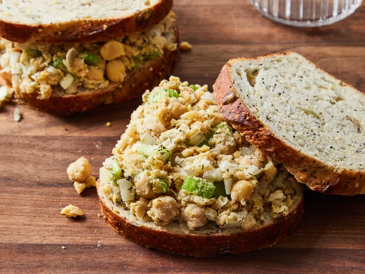
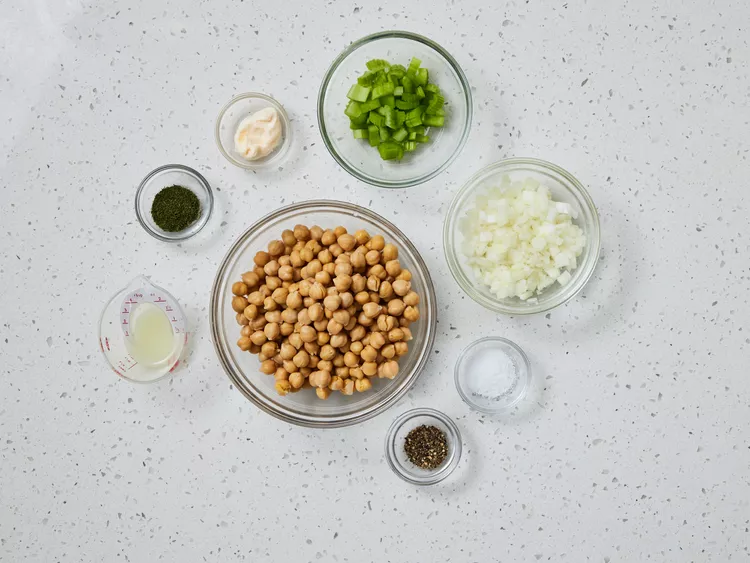
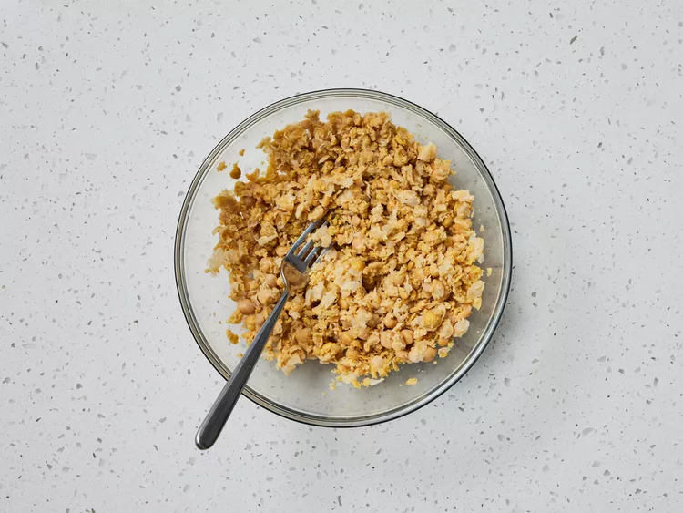
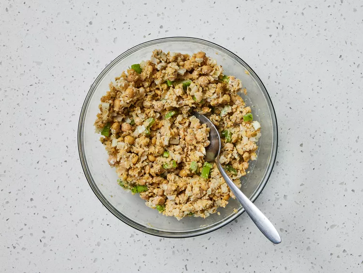
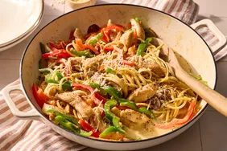
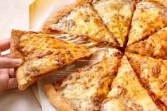
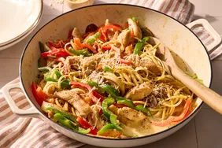
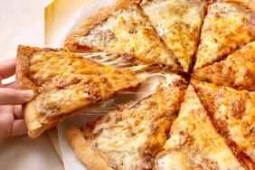

Vegetarian Chickpea Sandwich Filling
Description
Spread this chickpea sandwich filling on crusty whole grain rolls or pita bread and serve with lettuce and tomato.
Prep Time - 20 mins
Total Time - 20 mins
Servings - 3
Ingredients
- 1 (15.5 ounce) can chickpeas, drained and rinsed
- 1 stalk celery, chopped
- ½ onion, chopped
- 1 tablespoon mayonnaise, or to taste
- 1 tablespoon lemon juice
- 1 teaspoon dried dill weed
- salt and pepper to taste
Directions
Step 1
Step 2
Step 3
Step 4
Gather all ingredients.
Mash chickpeas in a medium bowl with a fork.
Mix in celery, onion, mayonnaise, lemon juice, and dill until well combined. Season with salt and pepper.
Serve on bread and enjoy!
Best served warm, Enjoy!
Other Related Recipes
 Classic Hearty Beef Stew

Cajun Chicken Pasta

Easy Homemade Pizza Dough
Hot Cross Buns
Classic Hearty Beef Stew

Cajun Chicken Pasta

Easy Homemade Pizza Dough
Hot Cross Buns